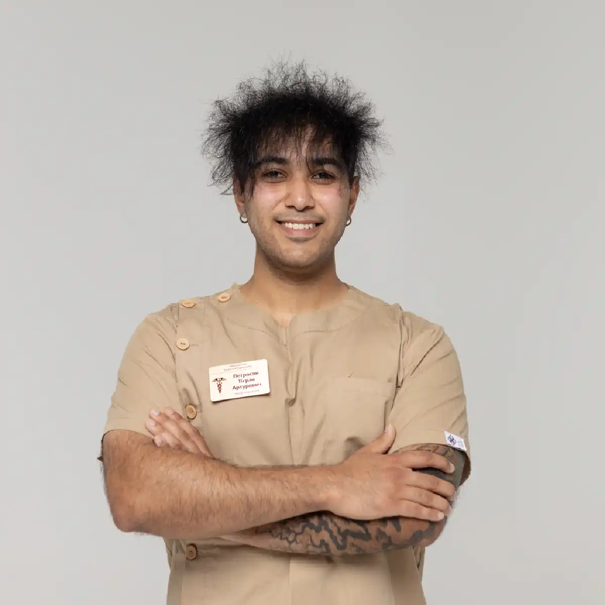

+38(068)
79 72 782
+38(068)
79 72 782Кодирование от алкоголизма
Первый шаг к контролю над зависимостью


Бесплатная консультация, работаем круглосуточно 24/7
Первый шаг к контролю над зависимостью

Дата написания: Обновляется...
Последнее обновление: Обновляется...
Кодирование от алкоголизма — это современный и эффективный метод лечения зависимости, направленный на формирование устойчивого отказа от употребления спиртных напитков. В основе метода лежит создание защитного барьера — как на физиологическом, так и на психологическом уровне, который помогает человеку удерживаться от употребления и значительно снижает риск срывов даже в стрессовых ситуациях.
Современные методы кодирования позволяют не только уменьшить физическую тягу к алкоголю, но и изменить отношение к нему на уровне мышления и поведения. У пациента формируется четкое понимание последствий употребления, усиливается самоконтроль, снижается импульсивность и постепенно исчезает привычная модель поведения, связанная с алкоголем. Это особенно важно на ранних этапах отказа, когда организм и психика еще не адаптировались к трезвому образу жизни.
Данный подход может применяться как самостоятельный этап лечения, так и в составе комплексной терапии. Однако на практике наилучшие результаты достигаются при сочетании кодирования с предварительной детоксикацией организма, медикаментозной поддержкой и последующей психологической помощью. Такой комплексный подход позволяет не только устранить физическую зависимость, но и проработать глубинные причины употребления, что значительно снижает вероятность рецидива. Индивидуальный подбор метода кодирования с учетом состояния пациента, длительности и особенностей употребления, а также уровня мотивации делает лечение максимально безопасным и эффективным. Врач подбирает оптимальную схему, которая будет работать именно для конкретного человека. Это позволяет добиться устойчивой ремиссии, улучшить общее состояние здоровья и значительно повысить качество жизни пациента, возвращая контроль над собой и своим будущим.
Современная наркология предлагает несколько методов кодирования, которые подбираются индивидуально:
| Кодирование уколом | Цена |
|---|---|
| Инъекция препарата Дисульфирам (3, 6, 12 месяцев) | От 6000 грн |
| Инъекция препарата Эспераль (3, 6, 12 месяцев) | От 8000 грн |
| Инъекция препарата Тетлонг (3, 6, 12 месяцев) | От 8000 грн |
| Инъекция препарата Вивитрол (12 месяцев) | От 12000 грн |
| Инъекция препарата Аквилонг (12 месяцев) | От 12000 грн |
| Авторское трехэтапное кодирование уколом (1-5 лет) | От 12000 грн |
| Хирургическое кодирование от алкоголизма | Цена |
|---|---|
| Имплантация (подшивка) капсулы Эспераль (12, 18, 36 месяцев) | От 15000 грн |
| Имплантация (подшивка) геля Дисульфирам (12, 18, 36 месяцев) | От 15000 грн |
| Психотерапевтическое кодирование от алкоголизма | Цена |
|---|---|
| Кодирование по методу Довженко (Гипнозом) (1-5 лет) | От 10000 грн |
| Авторское кодирование от алкоголизма гипнозом (5 лет) | От 12000 грн |
| Трехэтапное кодирование от алкоголизма гипноз + метод Довженко (5-10 лет) | От 20000 грн |
| Психофармакологическое кодирование от алкоголизма (1-5 лет) | От 20000 грн |
| Кодирование от алкоголизма лазером | От 10000 грн |
| Таблетированное кодирование от алкоголизма | Цена |
|---|---|
| Кодирование от алкоголизма Эспераль таблетки | От 1400 грн |
| Кодирование от алкоголизма Тетурам таблетки | От 1400 грн |
| Кодирование от алкоголизма Капли Мидзо | От 1400 грн |
| Раскодировка от алкоголизма | От 4000 грн |
Закодироваться от алкоголя — значит сформировать в организме и сознании пациента устойчивый защитный барьер, который препятствует употреблению спиртного и снижает риск возврата к зависимости. Этот барьер может иметь как физиологическую основу — в виде выраженной негативной реакции организма на алкоголь, так и психологическую — через формирование стойкого неприятия и осознанного отказа от употребления. В результате кодирования постепенно меняется отношение к алкоголю: снижается патологическая тяга, уменьшается интерес к спиртным напиткам, усиливается самоконтроль и способность принимать осознанные решения. Человек начинает избегать ситуаций, связанных с употреблением, иначе реагирует на стресс и легче справляется с провоцирующими факторами, которые ранее могли приводить к срывам.
У пациента формируется внутренняя мотивация к трезвому образу жизни. Пациент начинает по-другому воспринимать свое здоровье, отношения и повседневную жизнь, что положительно влияет на общий психологический фон. Это особенно важно для закрепления результата и предотвращения возврата к прежним привычкам. Кодирование от алкоголизма также дает так называемый «период защиты» — время, в течение которого человеку проще удерживаться от употребления и выстраивать новую модель поведения. За этот период можно закрепить полезные привычки, наладить режим сна, питание, восстановить физическое и психоэмоциональное состояние. Кодировка помогает не только временно отказаться от алкоголя, но и создает прочную основу для устойчивой ремиссии, позволяя человеку постепенно вернуться к полноценной и контролируемой жизни без зависимости.
При употреблении алкоголя после кодирования, особенно медикаментозного, в организме развивается выраженная негативная реакция, связанная с нарушением нормальной переработки этанола и накоплением токсичных продуктов его распада. Даже небольшое количество спиртного может вызвать резкое ухудшение самочувствия. Наиболее частые проявления такой реакции:
В более тяжелых случаях возможны скачки артериального давления, одышка, чувство страха, усиление интоксикации и общее ухудшение состояния. Интенсивность реакции зависит от дозы алкоголя, используемого препарата и индивидуальных особенностей организма. Такая реакция формирует мощный защитный механизм: у пациента возникает стойкая ассоциация алкоголя с ухудшением самочувствия. На этом фоне снижается не только физическая возможность употребления, но и психологическая тяга к спиртному. Человек начинает осознанно избегать алкоголя, понимая возможные последствия. Кодирование от алкоголизма всегда создает двойной барьер — физиологический и психологический, что значительно снижает риск срывов и помогает удерживаться от употребления.
Укол — это один из наиболее распространённых и эффективных методов медикаментозного кодирования от алкоголизма. Чаще всего используются препараты на основе Дисульфирама, которые блокируют нормальную переработку алкоголя в организме и формируют выраженную негативную реакцию при его употреблении.
Препарат вводится внутримышечно (под лопатку) и внутривенно и действует на протяжении определённого времени — от нескольких месяцев до года и более, в зависимости от дозировки и индивидуальных особенностей пациента. Уже после процедуры формируется устойчивый физиологический барьер, который помогает удерживаться от употребления спиртного.
Механизм действия заключается в том, что при попадании алкоголя в организм возникает резкое ухудшение самочувствия: появляется тошнота, слабость, учащенное сердцебиение и другие неприятные симптомы. Это делает употребление алкоголя крайне нежелательным и формирует стойкое отвращение к нему. Преимуществом метода является его быстрота и высокая эффективность — процедура занимает минимум времени, не требует госпитализации и начинает действовать практически сразу. Укол особенно подходит пациентам, которым необходим быстрый результат и дополнительная защита в период отказа от алкоголя. Кроме физиологического эффекта, снижается и психологическая тяга: пациент осознаёт последствия употребления и легче контролирует своё поведение. В сочетании с психологической поддержкой и изменением образа жизни такой метод позволяет добиться более стабильного и долгосрочного результата.
Подшивка от алкоголя — это современный метод медикаментозного кодирования, при котором препарат пролонгированного действия вводится под кожу и постепенно высвобождается в течение длительного времени. Чаще всего применяются средства на основе Дисульфирам, которые блокируют переработку алкоголя и формируют устойчивую защитную реакцию организма на его употребление.
Процедура проводится быстро и с минимальным хирургическим вмешательством — через небольшой разрез под местной анестезией. Госпитализация, как правило, не требуется, а сам процесс занимает немного времени. После введения препарата создается стабильный физиологический барьер: при попытке употребления алкоголя возникает выраженная негативная реакция, что делает его прием крайне нежелательным и значительно снижает риск срывов. Одним из ключевых преимуществ подшивки является её длительный и равномерный эффект. В отличие от укола, действие которого ограничено определенным сроком, подшивка может обеспечивать защиту на значительно более длительный период — от нескольких месяцев до нескольких лет. Это особенно важно для пациентов, которым необходима долгосрочная поддержка и стабильный контроль в период отказа от алкоголя.
Благодаря такому продолжительному действию пациент получает «запас времени», в течение которого легче сформировать новые привычки, изменить образ жизни и проработать психологические причины зависимости. Это значительно повышает шансы на достижение устойчивой ремиссии. Метод особенно эффективен для пациентов с хронической формой зависимости, частыми запоями и повторными срывами. В таких случаях подшивка выступает как надежная и длительная защита, позволяющая удержаться от употребления и постепенно вернуться к полноценной жизни без алкоголя.
Гипноз — это метод психотерапевтического воздействия, направленный на формирование устойчивого психологического отказа от алкоголя. Во время сеанса специалист мягко погружает пациента в изменённое состояние сознания и работает с подсознательными установками, помогая снизить тягу к спиртному и изменить отношение к алкоголю.
В процессе терапии формируются новые модели поведения, усиливается внутренняя мотивация к трезвому образу жизни, а также прорабатываются психологические причины зависимости. Это позволяет не просто временно отказаться от употребления, а заложить основу для более стабильного результата. Метод наиболее эффективен для людей с высокой внушаемостью, а также при наличии внутренней готовности к изменениям. При правильном подходе гипнотерапия может стать важной частью комплексного лечения алкогольной зависимости, особенно в сочетании с медикаментозной поддержкой и психологической реабилитацией.
Кодирование по методу Александра Довженко — это эффективный психотерапевтический способ лечения алкогольной зависимости, направленный на формирование устойчивого отказа от употребления спиртного. Метод основан на работе с подсознанием пациента и формировании чёткой внутренней установки на трезвость. Во время сеанса пациент находится в состоянии лёгкого транса, при этом полностью сохраняет сознание и контроль над происходящим. Специалист использует элементы внушения и эмоционально-стрессовой терапии, чтобы закрепить негативное отношение к алкоголю и усилить мотивацию к здоровому образу жизни.
Главная особенность метода — отсутствие медикаментозного воздействия. Это делает кодирование безопасным для организма и позволяет применять его пациентам, которым противопоказаны лекарственные методы. Эффект формируется за счёт психологической «блокировки», которая снижает тягу к алкоголю и помогает удерживаться от срывов. Метод Довженко особенно эффективен при наличии внутреннего желания отказаться от зависимости и высокой внушаемости. Он может использоваться как самостоятельный способ лечения или в составе комплексной терапии вместе с детоксикацией и последующей психологической поддержкой.
Лазерное кодирование — это современный физиотерапевтический метод лечения алкогольной зависимости, основанный на воздействии на биологически активные точки организма с помощью низкоинтенсивного лазерного излучения. Данный подход направлен на нормализацию работы центральной нервной системы, снижение уровня стресса и уменьшение патологической тяги к алкоголю. Во время процедуры специалист воздействует на определённые рефлексогенные зоны, связанные с механизмами формирования зависимости. Такое влияние способствует восстановлению нейромедиаторного баланса, улучшает общее психоэмоциональное состояние и помогает снизить внутреннее напряжение, которое часто провоцирует срывы. В результате у пациента формируется более устойчивое состояние, при котором легче контролировать своё поведение и отказаться от употребления спиртного.
Процедура полностью безболезненна, неинвазивна и не требует длительного восстановления. Она хорошо переносится пациентами, не оказывает токсического воздействия на организм и может применяться даже при наличии противопоказаний к медикаментозному кодированию. Как правило, курс включает несколько сеансов, что позволяет закрепить и усилить полученный эффект. Лазерное кодирование чаще используется как дополнительный элемент комплексного лечения. Максимальная эффективность достигается при сочетании с психотерапией, детоксикацией и последующей реабилитацией. Такой подход позволяет не только снизить тягу к алкоголю, но и проработать причины зависимости, сформировать новые поведенческие установки и повысить шансы на длительную ремиссию.
Таблетированные препараты применяются как важный элемент поддерживающей терапии при лечении алкогольной зависимости. Их основная задача — закрепить эффект кодирования, снизить патологическую тягу к спиртному и помочь пациенту удерживаться от срывов в повседневной жизни. Наиболее известные препараты — Тетурам и Эспераль. Они относятся к средствам на основе дисульфирама и формируют стойкую негативную реакцию на алкоголь. При употреблении спиртного на фоне этих препаратов возникает выраженное ухудшение самочувствия (тошнота, слабость, учащённое сердцебиение), что создаёт мощный сдерживающий фактор и помогает предотвратить срывы. В зависимости от схемы лечения медикаментозная поддержка может также:
Благодаря этому у пациента формируется более устойчивое отношение к трезвости, а риск возврата к употреблению значительно снижается. Назначение таблетированных препаратов всегда проводится врачом индивидуально, с учётом состояния пациента, стажа зависимости, наличия сопутствующих заболеваний и ранее проведённого лечения. Самостоятельный приём таких средств недопустим, так как неправильное использование может быть не только неэффективным, но и опасным для здоровья.
Кодирование рекомендуется при наличии сформированной алкогольной зависимости и ситуациях, когда человеку сложно самостоятельно контролировать употребление. Этот метод помогает создать дополнительный «барьер», который снижает риск срывов и облегчает переход к трезвому образу жизни. Основные показания к кодированию:
Кодирование может применяться на разных этапах лечения — как после детоксикации, так и в период стабилизации состояния. Оно помогает закрепить результат и снизить тягу к алкоголю, особенно в первые месяцы отказа, когда риск возврата к употреблению наиболее высокий. Наилучший эффект достигается при наличии внутренней мотивации пациента. Метод подходит людям, которые осознают проблему и готовы работать над её решением. В сочетании с психотерапией и поддержкой специалистов кодирование значительно повышает шансы на длительную ремиссию и восстановление качества жизни.
Кодирование от алкогольной зависимости, несмотря на свою эффективность, имеет ряд противопоказаний, которые обязательно учитываются перед проведением процедуры. Это необходимо для обеспечения безопасности пациента и достижения максимально возможного результата. Основные противопоказания:
Проведение кодирования от алкоголя на фоне этих факторов может быть не только неэффективным, но и представлять риск для здоровья. Особенно важно, чтобы пациент находился в трезвом состоянии, так как только в этом случае возможно полноценное и безопасное воздействие метода. Перед кодированием от алкоголизма обязательно проводится осмотр врача. Специалист оценивает общее состояние пациента, собирает анамнез, при необходимости назначает дополнительные обследования и подбирает наиболее подходящий метод лечения. Такой индивидуальный подход позволяет минимизировать риски и повысить эффективность терапии. В некоторых случаях процедура может быть временно отложена до стабилизации состояния пациента. Это нормальная практика, направленная на то, чтобы лечение проходило безопасно и приносило устойчивый результат.
После кодирования важно уделить внимание работе с психологическими причинами зависимости, так как именно они чаще всего становятся причиной срывов. Само по себе кодирование создаёт барьер, но не устраняет внутренние триггеры — стресс, тревожность, привычные модели поведения и эмоциональные реакции. Психотерапия помогает глубже проработать эти механизмы. В процессе работы пациент учится:
Регулярная поддержка специалиста снижает риск возврата к употреблению, особенно в первые месяцы после кодирования, когда человек адаптируется к новой жизни без алкоголя. Кроме того, психотерапия помогает восстановить самооценку, наладить отношения с окружающими и вернуть чувство контроля над своей жизнью.
Реабилитация — это ключевой этап лечения алкогольной зависимости, направленный на закрепление достигнутого результата и возвращение человека к полноценной, стабильной жизни без употребления алкоголя. Она включает не только отказ от спиртного, но и глубокую трансформацию образа жизни, мышления и поведенческих привычек, которые ранее поддерживали зависимость.
В процессе реабилитации большое внимание уделяется формированию новых, здоровых моделей поведения. Пациент постепенно учится выстраивать структурированный режим дня, восстанавливать физическое здоровье и эмоциональный баланс, а также находить безопасные и эффективные способы справляться со стрессом, тревогой и внутренним напряжением без употребления алкоголя. Это важный этап, так как именно отсутствие таких навыков часто становится причиной возврата к прежнему образу жизни.
Отдельное внимание уделяется работе с триггерами — ситуациями, эмоциями или окружением, которые ранее провоцировали употребление. Пациент учится распознавать такие факторы, контролировать реакции и вырабатывать новые стратегии поведения. Это позволяет значительно снизить риск срывов и повысить уверенность в собственных силах. Важную роль играет поддержка специалистов — психологов, психотерапевтов и врачей. Они сопровождают пациента на всех этапах восстановления, помогают корректировать состояние, прорабатывать внутренние конфликты и закреплять положительные изменения. При необходимости подключается медикаментозная поддержка, направленная на стабилизацию психоэмоционального состояния и снижение тяги.
Не менее значимым элементом является социальная адаптация. В процессе реабилитации человек восстанавливает отношения с близкими, учится заново выстраивать коммуникацию, возвращается к профессиональной деятельности и активной социальной жизни. Это помогает вернуть ощущение полноценности и значимости, что является важным фактором устойчивой ремиссии. Формирование новых привычек — основа долгосрочного результата. Это может включать регулярную физическую активность, развитие хобби и интересов, участие в группах поддержки, работу над личностным ростом и саморазвитием. Постепенно трезвый образ жизни становится естественным и комфортным.
Перед кодированием обязательна консультация врача-нарколога. На этом этапе специалист проводит комплексную оценку состояния пациента: уточняет стаж и особенности употребления алкоголя, наличие сопутствующих заболеваний, уровень мотивации и психологическую готовность к лечению. Врач также определяет возможные противопоказания, при необходимости назначает дополнительные обследования и помогает выбрать наиболее подходящий метод кодирования — медикаментозный, психотерапевтический или комбинированный. Такой индивидуальный подход позволяет учитывать все особенности организма и сделать лечение максимально безопасным.
Кроме того, на консультации пациент получает подробные рекомендации по подготовке к процедуре: соблюдение трезвости в течение определённого времени, режим питания, при необходимости — предварительная детоксикация. Это значительно повышает эффективность кодирования и снижает риск осложнений. Именно грамотная предварительная оценка и правильно подобранная тактика лечения обеспечивают стабильный результат и помогают сформировать устойчивый отказ от алкоголя.
Звоните прямо сейчас: +38(050-021-69-57)

Статья проверена экспертом
Могучев Станислав
Врач терапевт, ординатор
Возможно интересная статья:
Янтарная кислота, Бетаргин и Энтеросгель при алкогольной интоксикации

Да, мы строго соблюдаем полную конфиденциальность на всех этапах лечения. Информация о пациенте, диагнозе и прохождении терапии не передаётся третьим лицам. Обращение к нам не влечёт постановку на учёт. Вы можете быть уверены в безопасности и анонимности.
Программа лечения разрабатывается индивидуально после консультации со специалистом. Учитываются вид зависимости, её длительность, физическое и психологическое состояние пациента. Такой подход позволяет повысить эффективность терапии и снизить риск срыва. Мы не используем шаблонные решения.
Да, мы сопровождаем пациентов и после основного курса лечения. Проводятся консультации, рекомендации по адаптации и профилактике рецидивов. При необходимости возможна дальнейшая психологическая поддержка. Это помогает сохранить результат и вернуться к полноценной жизни.
Александр

Решила сделать укол от алкоголизма по рекомендации подруги, которая проходила эту процедуру в этом же центре. Я сомневалась, но врачи всё объяснили, успокоили. После укола не чувствую тяги к алкоголю, хотя раньше сложно было представить день без выпивки. Сейчас наслаждаюсь трезвостью, чувствую себя намного лучше.
Анонимно
Дуже довго не міг самостійно позбавитися залежності, тому зважився на підшивку. Процедура пройшла успішно, і з того часу я навіть не думаю про спиртне. Страх перед можливими наслідками допомагає триматися на плаву, а підтримка фахівців – величезна підмога у цьому нелегкому шляху. Центр надає як фізичну, а й моральну допомогу. Вдячний їм за другий шанс.
Анонимно
Я никогда не думал, что психологическое воздействие может настолько сильно повлиять на мою жизнь. Врач помог осознать всю серьезность ситуации, и теперь алкоголь не вызывает у меня никакого интереса. Процедура безопасна и эффективна, рекомендую тем, кто хочет по-настоящему изменить свою жизнь.
Анонимно
Я прошла кодирование гипнозом, и это было удивительное переживание. Во время сеанса я почувствовала глубокое расслабление, а потом – будто внутри что-то изменилось. Сейчас я свободна от алкоголя и наслаждаюсь этим состоянием. Благодарю центр за профессионализм и заботу! Отдельная благодарность Станиславу Вячеславовичу
Анонимно
Чесно кажучи, боявся рецидиву, але з процедури минуло півроку, і я навіть не думаю про випивку. Життя почало змінюватися на краще. Дякуємо лікарям за підтримку та мотивацію!
Анонимно
Після багаторічної боротьби із залежністю вирішила звернутись в клінку. Спочатку переживала, але лікарі дуже докладно розповіли про процес та можливі наслідки. Зараз я не п’ю вже 8 місяців і почуваюся чудово. Я така щаслива, що знайшла цей центр і знайшла контроль над своїм життям.
Анонимно
Метод Долженко казался мне странным, но я решил попробовать. Оказалось, что это не просто кодировка, а глубокая работа с психикой. Это позволило мне кардинально изменить отношение к алкоголю. Уже год я не пью, и не планирую возвращаться к прежней жизни. Простое человеческое спасибо!
Анонимно
Гипноз помог мне избавиться от постоянной тяги к алкоголю. После сеансов я заметила, что стала спокойнее и увереннее в себе. Теперь алкоголь меня больше не интересует. Центр мне очень помог, и я благодарна за их заботу и поддержку.
Номер телефона:
+380 (68) 797 27 82
+380 (50) 021 69 57
Адрес наркологического центра вашего города уточняйте по
телефону
Работаем в: Киеве, Одессе, Львове, Харькове, Днепре,
Запорожье, Черкассах, Чугуеве, Черноморске, Каменском
Telegram: t.me/umbrellaplus
График работы: Круглосуточно